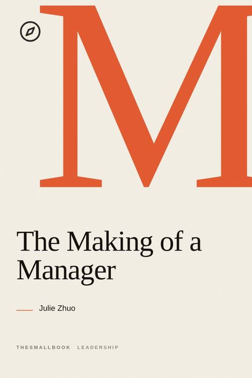

Library › Authors › Julie Zhuo
Books by Julie Zhuo
Julie Zhuo has one book in the library. Every book here is read down to the big idea, the lessons, the lines worth keeping and the actions worth taking. Start with the summary, then buy the full book if it earns a place on your shelf.

The Making of a Manager
2019 · 11 min · 8 lessons
A manager's output is the team's outcome. Everything else, the meetings, the feedback, the roadmap, is only a means to that.
Julie Zhuo went from designer to manager at twenty five with no training, and this book is the manual she wished she had. Management is three jobs in a trench coat: a clear purpose, the right people, and a process light enough to help. Your work stops being the work and becomes the conditions under which other people do better work than you could alone.
Lessons in the summary
- Your Job Just Changed
- Purpose Before Tasks
- Hire for the Job You Have
- Feedback Is a Gift
- The Smallest Process That Works
- Trust, Then Verify Less
- The One on One
- You Set the Temperature
Lines worth keeping
- Your job as a manager is not to do the work. It is to make the team effective.
- Feedback is a gift, and gifts arrive badly when they arrive late.
- Process exists to serve the team, not the team to serve the process.
Questions Julie Zhuo helps answer
Read nearby authors next
- L. David Marquet 1 book
- Michael D. Watkins 1 book